Leave-One-Out (LOO) predictive checks. See the Plot Descriptions section, below, and Gabry et al. (2019) for details.
Usage
ppc_loo_pit_overlay(
y,
yrep,
lw = NULL,
...,
psis_object = NULL,
pit = NULL,
samples = 100,
size = 0.25,
alpha = 0.7,
boundary_correction = TRUE,
grid_len = 512,
bw = "nrd0",
trim = FALSE,
adjust = 1,
kernel = "gaussian",
n_dens = 1024
)
ppc_loo_pit_data(
y,
yrep,
lw = NULL,
...,
psis_object = NULL,
pit = NULL,
samples = 100,
bw = "nrd0",
boundary_correction = TRUE,
grid_len = 512
)
ppc_loo_pit_qq(
y,
yrep,
lw = NULL,
...,
psis_object = NULL,
pit = NULL,
compare = c("uniform", "normal"),
size = 2,
alpha = 1
)
ppc_loo_pit_ecdf(
y,
yrep,
lw = NULL,
...,
psis_object = NULL,
pit = NULL,
K = NULL,
prob = 0.99,
plot_diff = FALSE,
interpolate_adj = NULL
)
ppc_loo_pit(
y,
yrep,
lw,
pit = NULL,
compare = c("uniform", "normal"),
...,
size = 2,
alpha = 1
)
ppc_loo_intervals(
y,
yrep,
psis_object,
...,
subset = NULL,
intervals = NULL,
prob = 0.5,
prob_outer = 0.9,
alpha = 0.33,
size = 1,
fatten = 2.5,
linewidth = 1,
order = c("index", "median")
)
ppc_loo_ribbon(
y,
yrep,
psis_object,
...,
subset = NULL,
intervals = NULL,
prob = 0.5,
prob_outer = 0.9,
alpha = 0.33,
size = 0.25
)Arguments
- y
A vector of observations. See Details.
- yrep
An
SbyNmatrix of draws from the posterior (or prior) predictive distribution. The number of rows,S, is the size of the posterior (or prior) sample used to generateyrep. The number of columns,Nis the number of predicted observations (length(y)). The columns ofyrepshould be in the same order as the data points inyfor the plots to make sense. See the Details and Plot Descriptions sections for additional advice specific to particular plots.- lw
A matrix of (smoothed) log weights with the same dimensions as
yrep. Seeloo::psis()and the associatedweights()method as well as the Examples section, below. Iflwis not specified thenpsis_objectcan be provided and log weights will be extracted.- ...
Currently unused.
- psis_object
If using loo version
2.0.0or greater, an object returned by thepsis()function (or by theloo()function with argumentsave_psisset toTRUE).- pit
For
ppc_loo_pit_overlay(),ppc_loo_pit_qq(), andppc_loo_pit_ecdf()optionally a vector of precomputed PIT values that can be specified instead ofy,yrep, andlw(these are all ignored ifpitis specified). If not specified the PIT values are computed internally before plotting.- samples
For
ppc_loo_pit_overlay(), the number of data sets (each the same size asy) to simulate from the standard uniform distribution. The default is 100. The density estimate of each dataset is plotted as a thin line in the plot, with the density estimate of the LOO PITs overlaid as a thicker dark line.- alpha, size, fatten, linewidth
Arguments passed to code geoms to control plot aesthetics. For
ppc_loo_pit_qq()andppc_loo_pit_overlay(),sizeandalphaare passed toggplot2::geom_point()andggplot2::geom_density(), respectively. Forppc_loo_intervals(),sizelinewidthandfattenare passed toggplot2::geom_pointrange(). Forppc_loo_ribbon(),alphaandsizeare passed toggplot2::geom_ribbon().- boundary_correction
For
ppc_loo_pit_overlay(), when set toTRUE(the default) the function will compute boundary corrected density values via convolution and a Gaussian filter, also known as the reflection method (Boneva et al., 1971). As a result, parameters controlling the standard kernel density estimation such asadjust,kernelandn_densare ignored. NOTE: The current implementation only works well for continuous observations.- grid_len
For
ppc_loo_pit_overlay(), whenboundary_correctionis set toTRUEthis parameter specifies the number of points used to generate the estimations. This is set to 512 by default.- bw, adjust, kernel, n_dens
Optional arguments passed to
stats::density()to override default kernel density estimation parameters.n_densdefaults to1024.- trim
Passed to
ggplot2::stat_density().- compare
For
ppc_loo_pit_qq(), a string that can be either"uniform"or"normal". If"uniform"(the default) the Q-Q plot compares computed PIT values to the standard uniform distribution. Ifcompare="normal", the Q-Q plot compares standard normal quantiles calculated from the PIT values to the theoretical standard normal quantiles.- K
For
ppc_loo_pit_ecdf()an optional integer defining the number of equally spaced evaluation points for the PIT-ECDF. Reducing K when usinginterpolate_adj = FALSEmakes computing the confidence bands faster. Ifpitis supplied, defaults tolength(pit), otherwiseyrepdetermines the maximum accuracy of the estimated PIT values andKis set tomin(nrow(yrep) + 1, 1000).- prob, prob_outer
Values between
0and1indicating the desired probability mass to include in the inner and outer intervals. The defaults areprob=0.5andprob_outer=0.9forppc_loo_intervals()andprob = 0.99forppc_loo_pit_ecdf().- plot_diff
For
ppc_loo_pit_ecdf(), a boolean defining whether to plot the difference between the observed PIT-ECDF and the theoretical expectation for uniform PIT values rather than plotting the regular ECDF. The default isFALSE, but for large samples we recommend settingplot_diff = TRUEto better use the plot area.- interpolate_adj
For
ppc_loo_pit_ecdf(), a boolean defining if the simultaneous confidence bands should be interpolated based on precomputed values rather than computed exactly. Computing the bands may be computationally intensive and the approximation gives a fast method for assessing the ECDF trajectory. The default is to use interpolation ifKis greater than 200.- subset
For
ppc_loo_intervals()andppc_loo_ribbon(), an optional integer vector indicating which observations iny(andyrep) to include. Dropping observations fromyandyrepmanually before passing them to the plotting function will not work because the dimensions will not match up with the dimensions ofpsis_object, but if all ofyandyrepare passed along withsubsetthen bayesplot can do the subsetting internally fory,yrepandpsis_object. See the Examples section for a demonstration.- intervals
For
ppc_loo_intervals()andppc_loo_ribbon(), optionally a matrix of pre-computed LOO predictive intervals that can be specified instead ofyrep(ignored ifintervalsis specified). If not specified the intervals are computed internally before plotting. If specified,intervalsmust be a matrix with number of rows equal to the number of data points and five columns in the following order: lower outer interval, lower inner interval, median (50%), upper inner interval and upper outer interval (column names are ignored).- order
For
ppc_loo_intervals(), a string indicating how to arrange the plotted intervals. The default ("index") is to plot them in the order of the observations. The alternative ("median") arranges them by median value from smallest (left) to largest (right).
Plot Descriptions
ppc_loo_pit_overlay(),ppc_loo_pit_qq(),ppc_loo_pit_ecdf()The calibration of marginal predictions can be assessed using probability integral transformation (PIT) checks. LOO improves the check by avoiding the double use of data. See the section on marginal predictive checks in Gelman et al. (2013, p. 152–153) and section 5 of Gabry et al. (2019) for an example of using bayesplot for these checks.
The LOO PIT values are asymptotically uniform (for continuous data) if the model is calibrated. The
ppc_loo_pit_overlay()function creates a plot comparing the density of the LOO PITs (thick line) to the density estimates of many simulated data sets from the standard uniform distribution (thin lines). See Gabry et al. (2019) for an example of interpreting the shape of the miscalibration that can be observed in these plots.The
ppc_loo_pit_qq()function provides an alternative visualization of the miscalibration with a quantile-quantile (Q-Q) plot comparing the LOO PITs to the standard uniform distribution. Comparing to the uniform is not good for extreme probabilities close to 0 and 1, so it can sometimes be useful to set thecompareargument to"normal", which will produce a Q-Q plot comparing standard normal quantiles calculated from the PIT values to the theoretical standard normal quantiles. This can help see the (mis)calibration better for the extreme values. However, in most cases we have found that the overlaid density plot (ppc_loo_pit_overlay()) function will provide a clearer picture of calibration problems than the Q-Q plot.The
ppc_loo_pit_ecdf()function visualizes the empirical cumulative distribution function (ECDF) of the LOO PITs overlaid with simultaneous confidence intervals for a standard uniform sample. For large samples, these confidence intervals are visually very narrow. Setting theplot_diffargument toTRUEtransforms the plot to display the difference of the ECDF and the theoretical expectation, which can aid in the visual assessment of calibration.ppc_loo_intervals(),ppc_loo_ribbon()Similar to
ppc_intervals()andppc_ribbon()but the intervals are for the LOO predictive distribution.
References
Gelman, A., Carlin, J. B., Stern, H. S., Dunson, D. B., Vehtari, A., and Rubin, D. B. (2013). Bayesian Data Analysis. Chapman & Hall/CRC Press, London, third edition. (p. 152–153)
Gabry, J. , Simpson, D. , Vehtari, A. , Betancourt, M. and Gelman, A. (2019), Visualization in Bayesian workflow. J. R. Stat. Soc. A, 182: 389-402. doi:10.1111/rssa.12378. (journal version, arXiv preprint, code on GitHub)
Vehtari, A., Gelman, A., and Gabry, J. (2017). Practical Bayesian model evaluation using leave-one-out cross-validation and WAIC. Statistics and Computing. 27(5), 1413–1432. doi:10.1007/s11222-016-9696-4. arXiv preprint: https://arxiv.org/abs/1507.04544
Boneva, L. I., Kendall, D., & Stefanov, I. (1971). Spline transformations: Three new diagnostic aids for the statistical data-analyst. J. R. Stat. Soc. B (Methodological), 33(1), 1-71. https://www.jstor.org/stable/2986005.
Examples
# \dontrun{
library(rstanarm)
library(loo)
#> This is loo version 2.9.0
#> - Online documentation and vignettes at mc-stan.org/loo
#> - As of v2.0.0 loo defaults to 1 core but we recommend using as many as possible. Use the 'cores' argument or set options(mc.cores = NUM_CORES) for an entire session.
#>
#> Attaching package: ‘loo’
#> The following object is masked from ‘package:rstan’:
#>
#> loo
head(radon)
#> floor county log_radon log_uranium
#> 1 1 AITKIN 0.83290912 -0.6890476
#> 2 0 AITKIN 0.83290912 -0.6890476
#> 3 0 AITKIN 1.09861229 -0.6890476
#> 4 0 AITKIN 0.09531018 -0.6890476
#> 5 0 ANOKA 1.16315081 -0.8473129
#> 6 0 ANOKA 0.95551145 -0.8473129
fit <- stan_lmer(
log_radon ~ floor + log_uranium + floor:log_uranium
+ (1 + floor | county),
data = radon,
iter = 100,
chains = 2,
cores = 2
)
#> Warning: The largest R-hat is 1.13, indicating chains have not mixed.
#> Running the chains for more iterations may help. See
#> https://mc-stan.org/misc/warnings.html#r-hat
#> Warning: Bulk Effective Samples Size (ESS) is too low, indicating posterior means and medians may be unreliable.
#> Running the chains for more iterations may help. See
#> https://mc-stan.org/misc/warnings.html#bulk-ess
#> Warning: Tail Effective Samples Size (ESS) is too low, indicating posterior variances and tail quantiles may be unreliable.
#> Running the chains for more iterations may help. See
#> https://mc-stan.org/misc/warnings.html#tail-ess
y <- radon$log_radon
yrep <- posterior_predict(fit)
loo1 <- loo(fit, save_psis = TRUE, cores = 4)
#> Warning: Found 7 observation(s) with a pareto_k > 0.7. We recommend calling 'loo' again with argument 'k_threshold = 0.7' in order to calculate the ELPD without the assumption that these observations are negligible. This will refit the model 7 times to compute the ELPDs for the problematic observations directly.
psis1 <- loo1$psis_object
lw <- weights(psis1) # normalized log weights
# marginal predictive check using LOO probability integral transform
color_scheme_set("orange")
ppc_loo_pit_overlay(y, yrep, lw = lw)
#> Some PIT values larger than 1! Largest: 1
#> Rounding PIT > 1 to 1. Gradient evaluation took 0.000389 seconds
#> Chain 2: 1000 transitions using 10 leapfrog steps per transition would take 3.89 seconds.
#> Chain 2: Adjust your expectations accordingly!
#> Chain 2:
#> Chain 2:
#> Chain 2: WARNING: There aren't enough warmup iterations to fit the
#> Chain 2: three stages of adaptation as currently configured.
#> Chain 2: Reducing each adaptation stage to 15%/75%/10% of
#> Chain 2: the given number of warmup iterations:
#> Chain 2: init_buffer = 7
#> Chain 2: adapt_window = 38
#> Chain 2: term_buffer = 5
#> Chain 2:
#> Chain 2: Iteration: 1 / 100 [ 1%] (Warmup)
#> Chain 2: Iteration: 10 / 100 [ 10%] (Warmup)
#> Chain 1: Iteration: 10 / 100 [ 10%] (Warmup)
#> Chain 1: Iteration: 20 / 100 [ 20%] (Warmup)
#> Chain 2: Iteration: 20 / 100 [ 20%] (Warmup)
#> Chain 2: Iteration: 30 / 100 [ 30%] (Warmup)
#> Chain 1: Iteration: 30 / 100 [ 30%] (Warmup)
#> Chain 2: Iteration: 40 / 100 [ 40%] (Warmup)
#> Chain 1: Iteration: 40 / 100 [ 40%] (Warmup)
#> Chain 2: Iteration: 50 / 100 [ 50%] (Warmup)
#> Chain 2: Iteration: 51 / 100 [ 51%] (Sampling)
#> Chain 1: Iteration: 50 / 100 [ 50%] (Warmup)
#> Chain 1: Iteration: 51 / 100 [ 51%] (Sampling)
#> Chain 2: Iteration: 60 / 100 [ 60%] (Sampling)
#> Chain 1: Iteration: 60 / 100 [ 60%] (Sampling)
#> Chain 2: Iteration: 70 / 100 [ 70%] (Sampling)
#> Chain 1: Iteration: 70 / 100 [ 70%] (Sampling)
#> Chain 2: Iteration: 80 / 100 [ 80%] (Sampling)
#> Chain 1: Iteration: 80 / 100 [ 80%] (Sampling)
#> Chain 2: Iteration: 90 / 100 [ 90%] (Sampling)
#> Chain 1: Iteration: 90 / 100 [ 90%] (Sampling)
#> Chain 2: Iteration: 100 / 100 [100%] (Sampling)
#> Chain 2:
#> Chain 2: Elapsed Time: 2.721 seconds (Warm-up)
#> Chain 2: 2.419 seconds (Sampling)
#> Chain 2: 5.14 seconds (Total)
#> Chain 2:
#> Chain 1: Iteration: 100 / 100 [100%] (Sampling)
#> Chain 1:
#> Chain 1: Elapsed Time: 2.914 seconds (Warm-up)
#> Chain 1: 2.422 seconds (Sampling)
#> Chain 1: 5.336 seconds (Total)
#> Chain 1:
#> Warning:
#> NOTE: The kernel density estimate assumes continuous observations and is not optimal for discrete observations.
ppc_loo_pit_qq(y, yrep, lw = lw)
#> Warning:
 ppc_loo_pit_qq(y, yrep, lw = lw, compare = "normal")
#> Warning:
#> Warning: Removed 18 rows containing non-finite outside the scale range (`stat_qq()`).
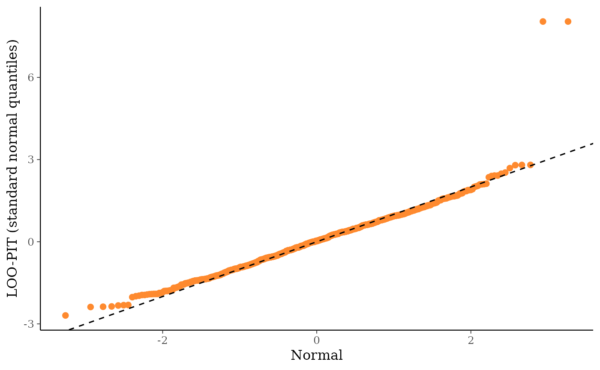
# predictive calibration check using LOO probability integral transform
ppc_loo_pit_ecdf(y, yrep, lw)
#> Warning:
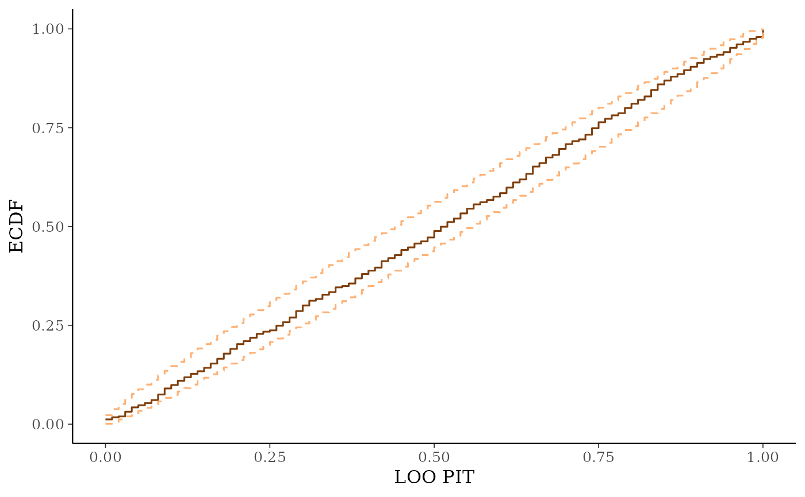
# With `plot_diff = TRUE` it is easier to assess the calibration.
ppc_loo_pit_ecdf(y, yrep, lw, plot_diff = TRUE)
#> Warning:
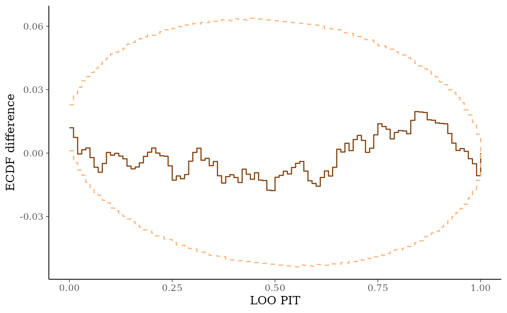
# can use the psis object instead of lw
ppc_loo_pit_qq(y, yrep, psis_object = psis1)
#> Warning:
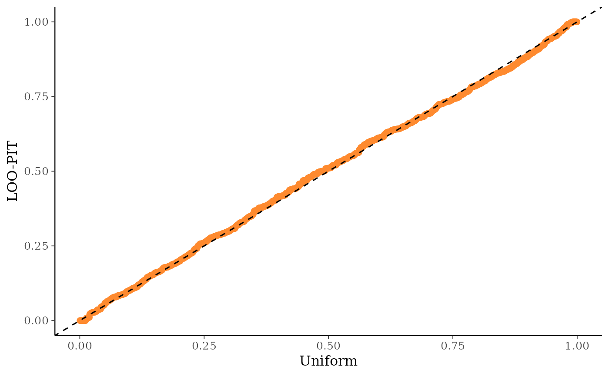
# loo predictive intervals vs observations
keep_obs <- 1:50
ppc_loo_intervals(y, yrep, psis_object = psis1, subset = keep_obs)
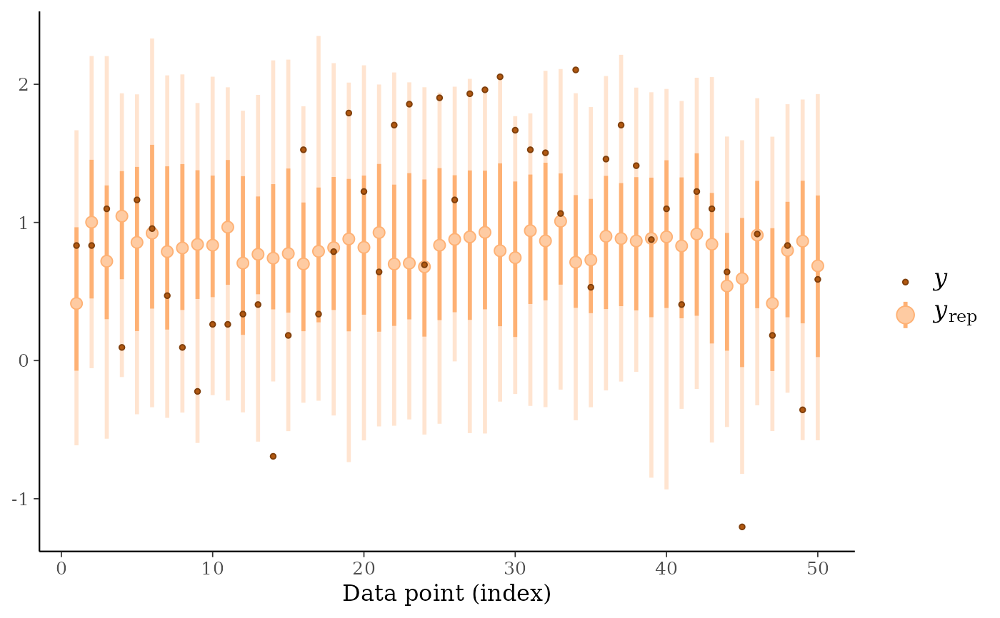
color_scheme_set("gray")
ppc_loo_intervals(y, yrep,
psis_object = psis1, subset = keep_obs,
order = "median"
)
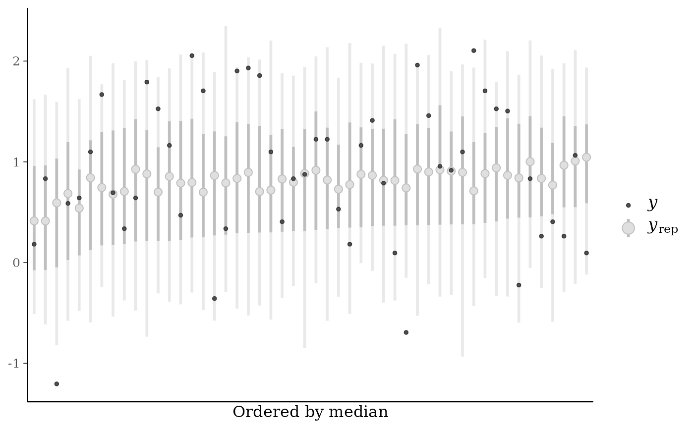
# }
ppc_loo_pit_qq(y, yrep, lw = lw, compare = "normal")
#> Warning:
#> Warning: Removed 18 rows containing non-finite outside the scale range (`stat_qq()`).
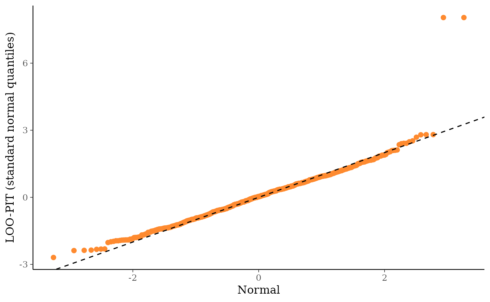
# predictive calibration check using LOO probability integral transform
ppc_loo_pit_ecdf(y, yrep, lw)
#> Warning:
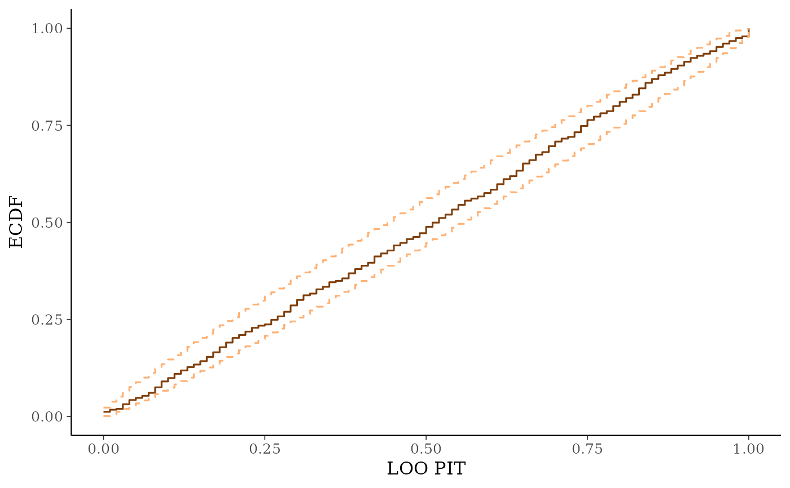
# With `plot_diff = TRUE` it is easier to assess the calibration.
ppc_loo_pit_ecdf(y, yrep, lw, plot_diff = TRUE)
#> Warning:
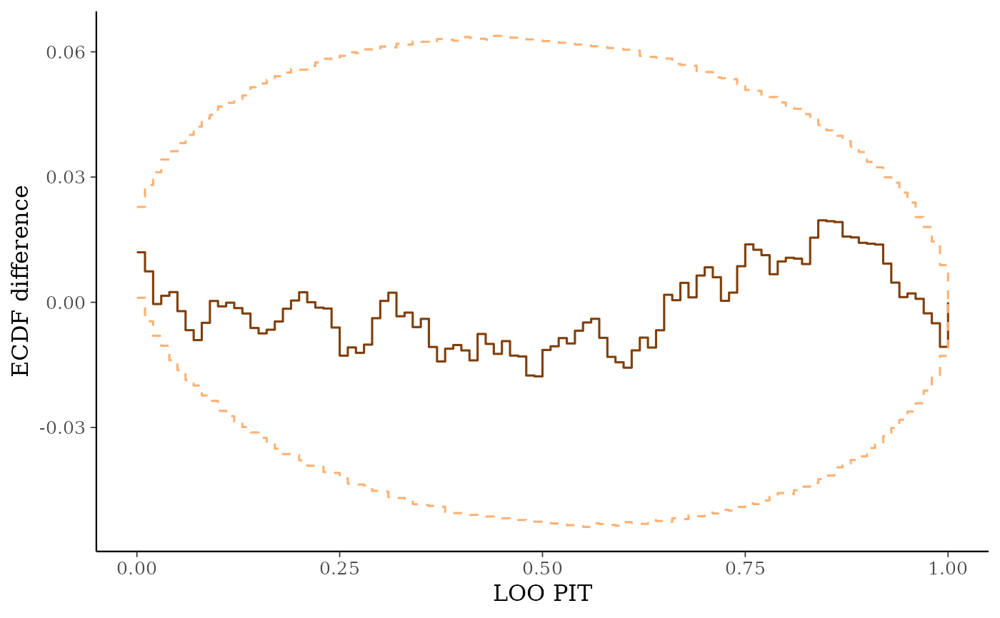
# can use the psis object instead of lw
ppc_loo_pit_qq(y, yrep, psis_object = psis1)
#> Warning:
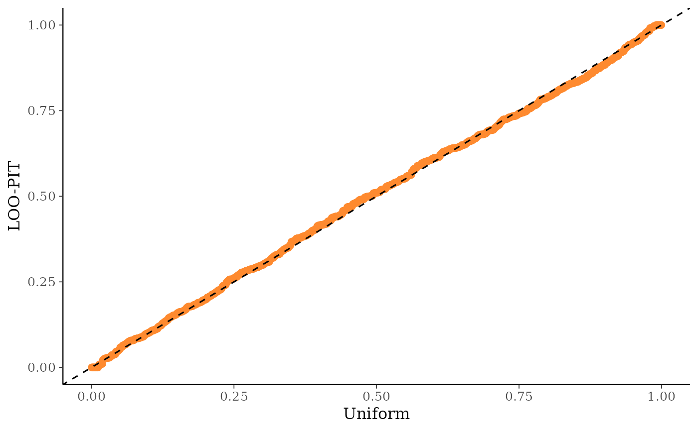
# loo predictive intervals vs observations
keep_obs <- 1:50
ppc_loo_intervals(y, yrep, psis_object = psis1, subset = keep_obs)
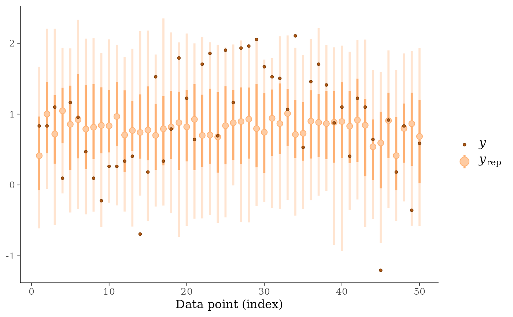
color_scheme_set("gray")
ppc_loo_intervals(y, yrep,
psis_object = psis1, subset = keep_obs,
order = "median"
)
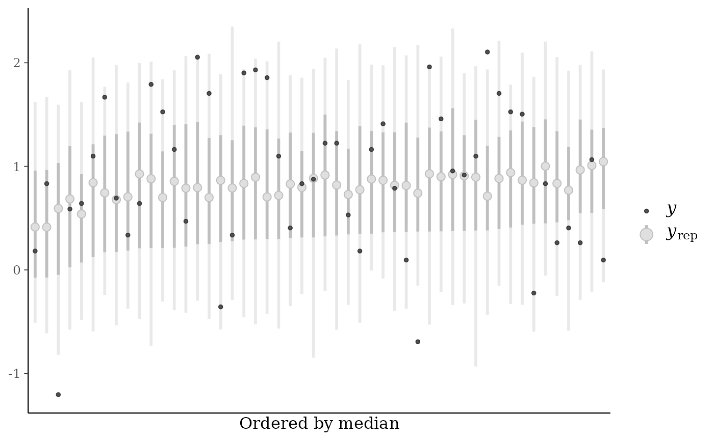
# }